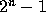
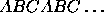

| Towers of Hanoi |
In 1883, Edouard Lucas invented, or perhaps reinvented, one of the most popular puzzles of all times - the Tower of Hanoi, as he called it - which is still used today in many computer science textbooks to demonstrate how to write a recursive algorithm or program. First of all, we will make a list of the rules of the puzzle:
A good way to get a feeling for the puzzle is to write a program which will show a copy of the puzzle on the screen and let you simulate moving the disks around. The next step could be to write a program for solving the puzzle in a efficient way. You don't have to do neither, but only know the actual situation after a given number of moves by using a determinate algorithm.
It is well known and rather easy to prove that the minimum number of moves needed to complete the puzzle with n disks is  . A simple algorithm which allows us to reach this optimum is as follows: for odd moves, take the smallest disk (number 1) from the peg where it lies to the next one in the circular sequence  ; for even moves, make the only possible move not involving disk 1.
The input file will consist of a series of lines. Each line will contain two integers n, m: n, lying within the range [0,100], will denote the number of disks and m, belonging to [0, ], will be the number of the last move. The file will end at a line formed by two zeros.
The output will consist again of a series of lines, one for each line of the input. Each of them will be formed by three integers indicating the number of disks in the pegs A, B and C respectively, when using the algorithm described above.
3 5 64 2 8 45 0 0
1 1 1 62 1 1 4 2 2